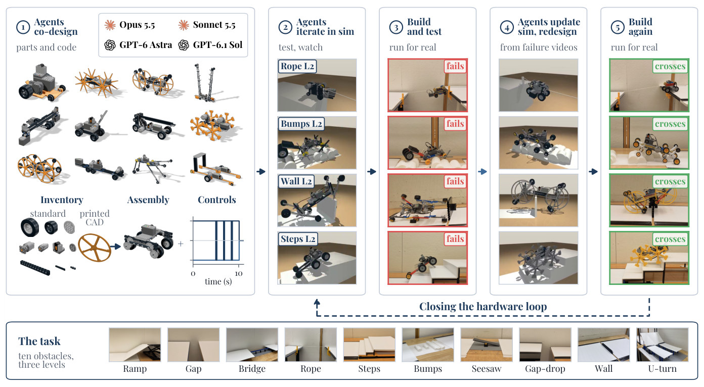
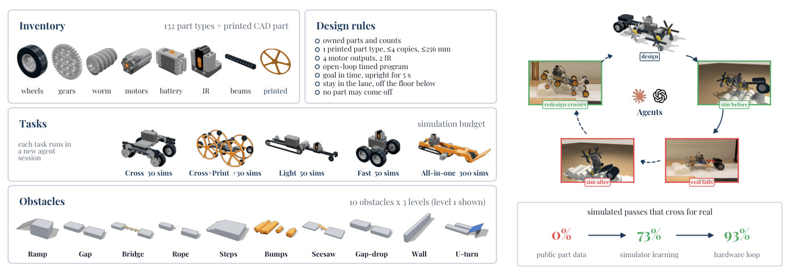
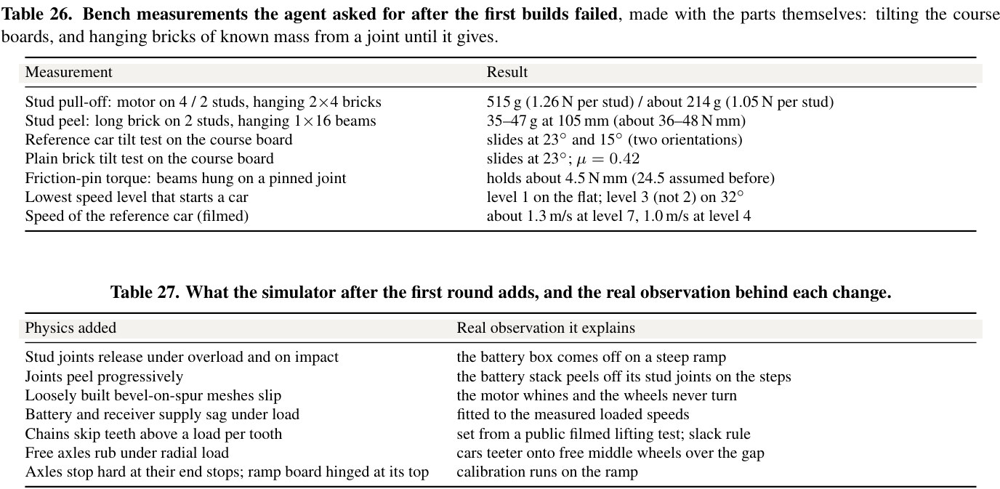
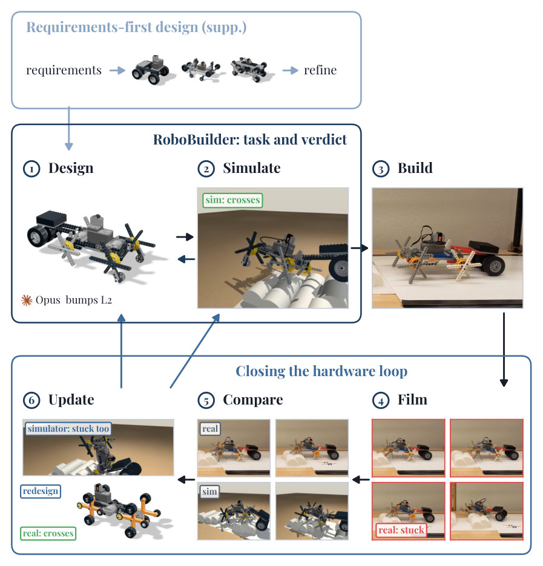
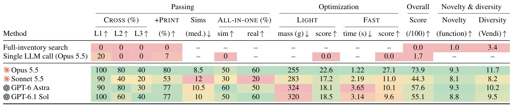
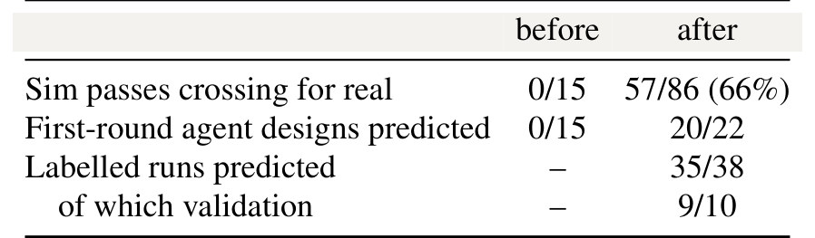
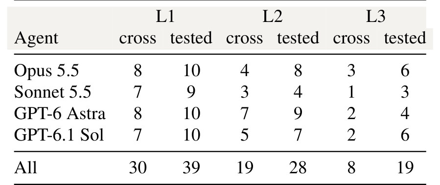
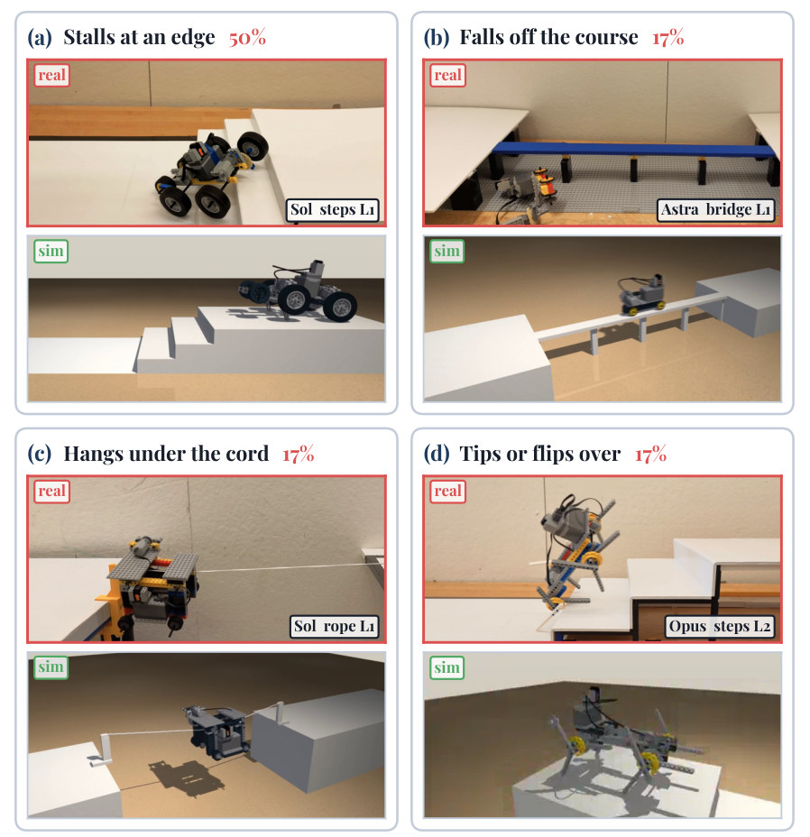
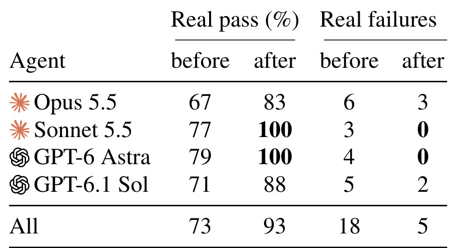
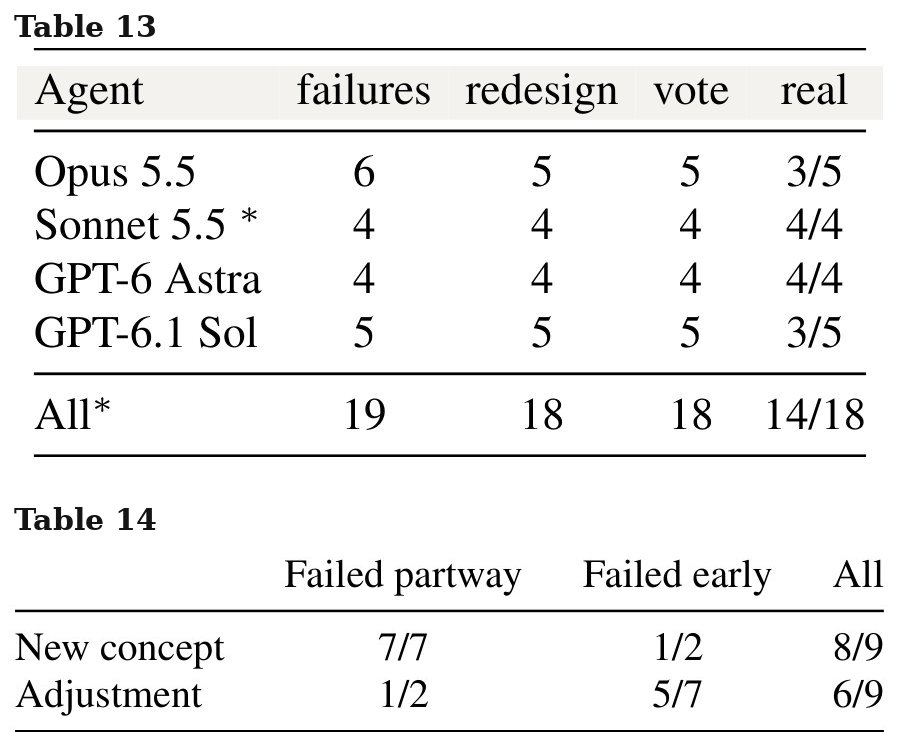

Agent-centric-real-to-sim · 归档于 2026-11-23
RoboBuilder
RoboBuilder: Agentic Robot Co-Design with Real-world Video Feedback in the Loop
arXivPDF Project pageCodeDataset
归档到 Agent-centric real-to-sim：agent 自己把 simulator 学对（要 bench 测量、对齐真机视频、把缺的物理写进 MuJoCo），之后每个真机失败都以视频回到 agent，由它改自己的 sim 副本再重设计。也贴近 Robotic harness（Claude Code / Codex 带 validator、simulator、verdict 工具做设计 benchmark）。
TL;DR
- Problem
- 让 coding agent 用真实零件同时设计机器人的硬件和开环程序；仿真里过了不等于真机能过：用公开零件数据的 simulator，15 个仿真通过的设计在真机 44 次尝试里一次也没过。
- Idea
- 两层 real-to-sim：先由 agent（Opus 5.5）自己学 simulator（要 bench 测量、对齐训练/验证视频、补缺的物理）；benchmark 里每个仿真通过的设计都手工搭出来测，真机失败的视频回到原 agent，它在自己的 sim 副本里做最小修改（旧设计必须"照视频那样失败"），再重设计、再搭。
- Result
- 学到的 simulator 下 57/86 = 66% 的仿真通过在真机也成立（L1 77%、L2 68%、L3 42%，Tab. 23/25）；一轮 hardware loop 把 L1–L2 的真机失败从 18 降到 5（−72%），成立率 73% → 93%（Tab. 12）。仿真里 agents 过 98% 的 L1 任务，全库存搜索 0%（Tab. 2/20）。
Problem
仿真里过了的机器人，真机上卡住：simulator 错在只有真跑才看得到的地方
Running example · 后面每个 stage 都跟着它走
Opus 5.5 · Bumps level 2（CROSS 任务）：赛道上是圆形 bump（rod），L2 的 rod 高 55 mm（Fig. 28），考 clearance 和 compliance；零件只能从 132 种、约 3,000 件 的库存里拿（CROSS+PRINT 才多给一种 CadQuery 打印件）；程序是开环的定时电机速度序列；预算 30 次仿真。
→ 想要：一台在时限内到达终点、直立 5 s、不掉零件的机器人，而且按设计手工搭出来、程序不改，在实物赛道上也能过。论文自己就拿这个例子贯穿 Fig. 1、3、7、21 和附录 D.4。
flowchart LR IN["例子输入
bumps L2 · 55 mm
132 种零件 · 30 次"] IN --> A1["全库存搜索
random + GA
同 sim、同预算"] A1 --> AX["没有先验，只拼出
轮式、履带车
所有任务 0%"]:::gap IN --> B1["Single LLM call
一次出设计
无仿真反馈"] B1 --> BX["不迭代就过不了
L2 0/10"]:::gap IN --> C1["Agent + θ0
公开零件数据
的 simulator"] C1 --> CX["仿真过，真机打滑、
关节拉开、齿轮脱啮
真机 0/15"]:::gap IN --> D1["Agent + θ1，无 loop
spoked wheels
第 22 次仿真通过"] D1 --> DX["真机在 bump 棱上空转
Opus L1–L2 只成立 67%"]:::gap
数字：全库存搜索 = Tab. 2（CROSS L1/L2/L3 都是 0）；single LLM call = Tab. 20（Opus 5.5 单次调用 L2 0/10、L1 2/10）；θ0 = §1/§3（首轮 15 个仿真通过的设计，44 次真机尝试 0 次通过，不是专门的 bumps L2 设计）；θ1 = Tab. 18（Opus bumps L2 第 22 次仿真通过、真机 ✗）和 Tab. 12（Opus L1–L2 真机成立 67%）。前两条在 bumps L2 上坏在哪一步是推断：论文只报告通过数，§4 说搜索"只造轮式和履带车，不造障碍需要的 boom、腿、抓绳器"，单次调用说明"能用的设计来自迭代"。
根本问题：agent 迭代用的 rigid-body simulator 只建模"零件是什么"，不建模"snap-fit 小机器人怎么坏"（stud 拉开、齿轮跳齿、供电掉压）；而 co-design 每一轮都换一台新机器人，校准一台固定机器人的 sim 不够。 这篇的切入点：把 sim 校准交给 agent：先靠它要的 bench 测量和真机视频学出 θ1；再把每个仿真通过的设计真搭真测，真机失败作为视频回到 agent，它在自己的副本里做可检验的最小修正，再重设计。
Related work
| 相关工作 | 解决什么 | 怎么解决 | 和本文的区别 |
|---|---|---|---|
| 同一问题 · 别的解法 | |||
| LLM 在 physics sandbox 里拼机器 BesiegeField [93]、BuildArena [88]（论文说最接近） | LLM 用标准零件拼出能干活的机器 | 写装配程序，sandbox 物理当判定（Tab. 1：BesiegeField 有 agent loop） | 判定止于 simulator、从不实搭 → 本文每个仿真通过都手工搭出来测，真机结果回流到设计和 sim |
| LLM / 进化式 robot co-design RoboGrammar [94]、RoboMorph [63]、Text2Robot [68]、Chen et al. [11] | 同时设计形态和控制 | 在 graph grammar、voxel 或参数化身体里搜索，LLM 当变异算子 | 固定的人工设计空间 + 固定 sim（Text2Robot、Chen 有实物但不回流）→ 本文开放 132 种真实零件 + agent 写的 CAD 打印件 |
| 积木结构生成并实搭 BrickGPT [60]、Blox-Net [22]、IDfRA [34]、LMBuild [42] | 生成稳定、可搭的积木结构 | 生成 + 稳定性检查，由人或机器人搭 | 多数只看结构立不立得住（LMBuild 有功能任务但不实搭，Tab. 1）→ 本文要越障，带电机、齿轮和定时程序 |
| 相似做法 · 别的问题 | |||
| 用真实数据校准一台固定机器人的 sim domain randomization [80]、system ID [15, 29, 66, 78]、从真机 run 调 sim [9, 26]、DrEureka [47] | 单台机器人的 sim-to-real gap | 随机化或拟合已有参数，DrEureka 让 LLM 定随机化范围 | 只调已有参数、只服务那一台 → 本文 agent 自己要 bench 测量，并把缺的物理写成代码（可断的 stud 焊点、跳齿、掉压） |
| Agent / VLM 看真机视频修 sim、重建 twin Vid2Sid [65]、Swim2Real [64]、SimEX [28]、Agentic Real2Sim [10]、PhysTwin [31]（除 Swim2Real 外 library 都有页面） | 从视频或真机 trial 拟合 sim 参数、重建可仿真的 twin | VLM 比对仿真和真实视频；coding agent 按 trial 改 sim；从视频重建 | 每次拟合都对着同一台机器人或物体，也在它身上评 → 本文的修正要对还没搭过的新设计成立：旧设计须照视频失败才收，重设计还要过 5 次扰动投票再实搭 |
来源：论文 §1 引言、§2 Related Work 和 Tab. 1（Functional task / Real parts / Built for real / New mechanisms / Agent loop / Real feedback 六列，只有本文全勾）。论文没有和任何一行做数值对比，所以 library 里的 Agentic Real2Sim、PhysTwin、Vid2Sid、SimEX 也没有对比数字；§2 只说它们"calibrate a model of one fixed robot"。未另行检索。
Level 1 · Big picture
设计 → 仿真里迭代 → 实搭实测 → 看失败视频改 sim 和设计 → 再搭

怎么读这张图
- ① Agents co-design（parts and code）：四个 agent（Opus 5.5、Sonnet 5.5 跑在 Claude Code；GPT-6 Astra、GPT-6.1 Sol 跑在 Codex）从 Inventory（standard 零件 + printed CAD 打印件）拼出 Assembly，再写 Controls（0–10 s 的定时电机开关序列）。例子：Opus 为 bumps L2 拼出前置 spoked wheels 的车。
- ② Agents iterate in sim（test, watch）：Rope L2、Bumps L2、Wall L2、Steps L2 四个设计在仿真里都通过。例子：spoked-wheel 车在第 22 次仿真通过 verdict。
- ③ Build and test（run for real）：红框 fails：四台按设计搭出来的机器人在实物赛道上失败。例子：bumps L2 那台卡在 bump 上。
- ④ Agents update sim, redesign（from failure videos）：灰色渲染是 agent 看完失败视频后的重设计（仿真里）。例子：把 hard plastic 对 bump rod 的摩擦从 0.387 改成 0.30，再换成 whegs。
- ⑤ Build again（run for real）：绿框 crosses：重设计真机通过。虚线 "Closing the hardware loop" 从 ⑤ 回到 ②：这一圈可以再转。
- 底部 The task：Ramp、Gap、Bridge、Rope、Steps、Bumps、Seesaw、Gap-drop、Wall、U-turn，各 3 个 level。例子在 Bumps。
flowchart TD S0["θ0 公开零件数据
15 个仿真通过
真机 0 个过"]:::gap S0 --> S1["Agent 学 simulator
bench 测量 + 视频 → θ1"]:::win S1 --> D["Agent 在 θ1 里 co-design
spoked wheels 通过"] D --> B["实搭、程序不改真跑
卡在 bump 棱上"]:::gap B --> L["Loop：看失败视频
摩擦 0.387→0.30
换成 whegs"]:::win L --> O["再搭再测
真机通过"]:::win
Level 2 · Stages
6 个 stage：SIM 一次、BENCH 和 LAB 每个任务、LOOP 每个真机失败

怎么读这张图
- Inventory（132 part types + printed CAD part）：wheels、gears、worm、motors、battery、IR、beams、printed。例子：重设计用到 worm 驱动和打印的 whegs。
- Design rules：只用拥有的零件和数量；1 种打印件、≤4 份、≤256 mm；4 个电机输出、2 个 IR；open-loop timed program；goal in time、upright for 5 s；不出车道、不掉下；no part may come off。
- Tasks（each task runs in a new agent session）：Cross 30 sims、Cross+Print +30 sims、Light 50 sims、Fast 50 sims、All-in-one 300 sims。例子跑的是 Cross。
- Obstacles（10 × 3 levels，图里画的是 level 1）：例子在 Bumps，level 2 把 rod 从 35 mm 提到 55 mm（Fig. 28）。
- 右侧一圈：design → sim before（仿真通过）→ real fails → sim after（改过的 sim 里旧设计也失败）→ redesign crosses。这就是 running example 的 Stage 2–6。
- 右下 simulated passes that cross for real：0% public part data（首轮 15 个设计）→ 73% simulator learning → 93% hardware loop（后两个是 L1–L2 的 benchmark 设计）。
flowchart TD S1["1 · Learn simulator（SIM）
θ0 → θ1，7 项测量"]:::win S2["2 · Co-design（BENCH）
spoked wheels
第 22 次仿真通过"] S3["3 · Build & film（LAB）
卡在 bump 棱上"]:::gap S4["4 · Watch（LOOP）
failure record"] S5["5 · Correct sim copy（LOOP）
rod 摩擦 0.387→0.30"]:::win S6["6 · Robust redesign（LOOP）
whegs 过投票"]:::win S1 --> S2 --> S3 --> S4 --> S5 --> S6 S6 -. 再搭再测 .-> S3 click S1 href "#stage-1" click S2 href "#stage-2" click S3 href "#stage-3" click S4 href "#stage-4" click S5 href "#stage-5" click S6 href "#stage-6"
点击 stage 展开 Level 3 细节。Stage 3–6 怎么串成一圈、在例子上怎么走，见 Hardware loop 全程。
符号表（§3 的记号，Stage 1、5、6 会用到）
| 符号 | 白话 | 在例子里 |
|---|---|---|
| θ | simulator 的代码和物理参数 | θ0 = 公开零件数据版；θ1 = agent 学过的版；θ′ = loop 里改过的副本 |
| x = (d, u) | 一个候选：装配 d（零件、位姿、连接）+ 开环程序 u（何时把哪个电机设成哪档速度） | x0 = spoked-wheel 车 + 它的程序；x1 = whegs 重设计 |
| o | 障碍及其 level | bumps L2 |
| Vθ(x, o) | simulator 的判定，1 = 通过（规则检查 R(d)=1，三个起点都按时到达并直立） | Vθ1(x0) = 1 |
| Y(x, o) | 真机结果，1 = 真机通过 | Y(x0) = 0（卡住） |
| Δθ = Pr[Y=0 | Vθ=1] | sim-to-real gap：仿真通过却真机失败的比例；SIM 和 LOOP 通过改 θ 和 x 降低它 | θ0：15/15 失败；θ1：L1–L2 为 27%（= 100% − Tab. 12 的 73%） |
| Oi、ℓ | 第 i 段真机视频；在匹配时刻比较真机和仿真 run 的差异（由 agent 自己判断） | 首轮设计的拍摄 |
| B | agent 认不出的参数的不确定范围 | 论文没给 bumps L2 这次的 B |
Level 3 · Details
每个 stage 的细节
Stage 1 Learn the simulator（ROBOBUILDER-SIM，benchmark 之前做一次） θ0（MuJoCo + 公开零件数据）+ 首轮设计的真机视频 + 测量 → θ1
- Why：θ0 下首轮 15 个仿真通过的设计在真机 44 次尝试里 0 次通过；视频显示轮胎抓地不如假设、长车架下垂、关节拉开、齿轮脱出啮合、坡上载荷移动（§3）。
- θ0 是什么：MuJoCo；每个零件有自己的碰撞几何、质量和关节模型；电机按 torque–speed 曲线；每条赛道有 sim twin；摩擦、关节强度、电机曲线来自公开零件数据和估计，没拟合过任何真机 run（§3、G.1）。
- Agent 要的测量（Tab. 26，共 7 项）：全用零件本身做的 bench test：倾斜赛道板、挂已知质量的砖直到关节松开。测得的值替换估计，例如 friction pin 只扛 4.5 N·mm，原来假设 24.5。
- 对齐视频：拍的真机 run 分 train / validation；agent 在匹配时刻对比每段训练视频和它的仿真，拟合参数，并给缺的物理建模（Tab. 27 的 7 项，正文还提到 per-tyre grip）。
- 目标：θ1 = argminθ Σi ℓ(Sθ(xi, oi), Oi)，并且要和测量值一致；agent 自己提出、自己判断每个改动（§3）。
- 保留规则：改动一次加一个；只有复现训练结果、并在 validation run 上也成立才保留；共 5 个 calibration round（§3、G.1）。
- θ1 的物理（G.1）：零件仍是刚体；stud 关节变成可断的 weld（拔出、peel、剪切）；轴有柔度、能滑动；过载齿轮跳齿再啮合；电机用 torque–speed 模型，加 IR 延迟和电池掉压。
- 成本：26 台机器人、约 1,130 件、约 27 h（Tab. 11）。
flowchart TD a["θ0 公开零件数据
15 个仿真通过
真机 0/15"]:::gap a --> b["Agent 要 bench 测量
pin 4.5 N·mm
（原假设 24.5）"] b --> c["对齐训练视频
拟合参数
写缺的物理"] c --> d["Validation 把关
不成立就丢"] d --> e["θ1
预测对 35/38 段 run"]:::win

怎么读这张图
- Table 26 左列 Measurement（agent 要的测试）/ 右列 Result（作者实测）：stud pull-off：电机用 4 / 2 个 stud 吊 2×4 砖，扛 515 g（每 stud 1.26 N）/ 约 214 g（每 stud 1.05 N）；stud peel：长砖 2 个 stud，105 mm 处挂 1×16 梁，35–47 g（约 36–48 N·mm）。
- Table 26 摩擦两行：参考小车在赛道板上 23° 和 15° 开始滑（两个朝向）；单块砖 23° 滑，µ = 0.42。
- Table 26 关节和电机三行：friction pin 约 4.5 N·mm（之前假设 24.5）；平地速度档 1 就能起步，32° 坡要档 3（不是 2）；参考小车 level 7 约 1.3 m/s，level 4 约 1.0 m/s。
- Table 27 左列 Physics added（agent 写进 sim 的模型）/ 右列 Real observation it explains：stud 关节过载和冲击时脱开 ← 陡坡上电池盒掉下来；关节逐渐 peel ← 台阶上电池堆从 stud 上剥离；松装的 bevel-on-spur 打滑 ← 电机响、轮子不转。
- Table 27 其余四行：电池和接收器供电在负载下掉压 ← 拟合到实测带载速度；链条超过每齿载荷就跳齿 ← 用公开的起重视频定、加松弛规则；自由轴径向受载时摩擦 ← 过 gap 时车会翘到中间的自由轮上；轴撞到端点硬停、ramp 板顶端铰接 ← ramp 上的 calibration run。
- 和例子的关系：Opus 在 bumps L2 上用的就是这个 θ1；hard plastic 对 bump rod 的摩擦不在这两张表里，Stage 5 才被 loop 改掉。
Running example 在这一步
例子还没开始；它要用的 simulator 在这一步定型：θ1 里 stud 会被拉开、齿轮会跳齿、friction pin 只有 4.5 N·mm，而 hard plastic 对打印 bump rod 的摩擦是 0.387（这个值来自 D.3 的修正记录）。
Stage 2 Co-design in θ1（ROBOBUILDER-BENCH） 赛道 JSON + 库存 + 文档 + 仿真预算 → 通过 verdict 的设计 x = (d, u)
- Why：设计空间巨大又必须能真搭：132 种、约 3,000 件；只用 25 件的装配粗算就约 1068 种，通过的机器人中位数 114 件；每个电机程序约 1016 种时序（§1、H.4）。
- 设计和程序：d = 摆放的零件 + 连接（stud、pin、axle-in-hole、齿轮啮合、链条），JSON；u = 最多 200 条定时命令，每条是 −7…+7 的速度档或 brake，开环（H.2）。
- Validator：只用拥有的零件；每个零件都通过真实关节相连（面贴合 ±0.3 mm、stud 在 8 mm 网格上）；不穿插；齿轮中心距、链条松弛；电线够得着；只允许定时命令（H.2）。
- Design review：拦关键问题：会滑出的轴或 pin（或脱啮的齿轮）、只靠同向 stud 吊着的子装配、承载的组件只在一条铰链线上（H.2）。
- Verdict：Vθ = 1 当且仅当 R(d) = 1，且三个起点（标称、偏 1 mm、晚 50 ms）都按时到达、直立完好 5 s（§3、H.2）。
- 任务链：CROSS 30 次；失败则 CROSS+PRINT 再 +30 次并给一种打印件；然后 LIGHT、FAST 各 50 次（这两类设计不实搭）；ALL-IN-ONE：一台打印结构的 L1 机器人过 10 个障碍、300 次。每个任务新开 session；做完写 lessons file，带到下一个 level（§3）。
- Agent 环境：Claude Code（Opus 5.5、Sonnet 5.5）、Codex（GPT-6 Astra、GPT-6.1 Sol），medium reasoning；同样的文档、仿真预算（不限 token）和工具：validator、design review、simulator + verdict、contact sheets 和视频；沙盒无网（§4、H.3）。
flowchart LR a["Task + 文档
bumps L2 · 30 次"] --> b["Validator + review
库存、真实关节"] b --> c["θ1 verdict ×3 起点
第 22 次通过"]:::win
Running example 在这一步
Opus 5.5 在 θ1 里迭代，拼出前置 spoked wheels 的车（Fig. 21 ①），在 30 次预算里的 第 22 次仿真 通过 verdict（Fig. 21 ② "sim: crosses"，Tab. 18）。之后它还做了 LIGHT（532 g）和 FAST（12.93 s），这两个不实搭（Tab. 18）。
Stage 3 Build & film（ROBOBUILDER-LAB） 仿真通过的设计 + 生成的 build package → 最多 3 次拍摄的真机 try + 真机结果 Y
- Why：真搭真跑是唯一骗不过 friction、flex、backlash 和重量分布的测试（§3）。
- How：每个任务里仿真通过的设计都按生成的 build package 手工搭；程序原封不动，在赛道实物复制品上跑；最多拍 3 次、和仿真对齐；任一次到终点就算真机通过（§3、§4 Metrics）。
- 规模：135 台机器人、约 13,000 件、约 240 h（每件 43 s 组装，加每台每赛道 30 min 修复、复位、拍摄），另有约 106 h 打印机时（Tab. 11）；461 段真机视频，每段配对其仿真（§3、J.1）。
- 判定：真机结果由作者看视频决定（LLM Usage Statement）。
flowchart LR a["Build package
手工搭，程序不改"] --> b["实物赛道
最多 3 次 try"] b --> c["真机结果 Y
卡在棱上 → 0"]:::gap
Running example 在这一步
spoked-wheel 车被搭出来（Fig. 21 ③），在真实 bumps 上 spoked wheels 顶着 bump 的棱空转（Fig. 3 说明），拍下来是 "real: stuck"（Fig. 21 ④），失败类型 "stalls at an edge"（Fig. 7a）。Y(x0) = 0，于是成为一个 loop 任务。
Stage 4 Watch the failure（LOOP 第 1 步） 设计 + 拍摄的 tries + 仿真 + frame-sheet / real-vs-sim 工具 → failure record
- Why：先分清是设计、simulator 还是搭建的问题，再决定改哪里（§3）。
- 谁来做：每个 L1–L2 "仿真通过、真机失败"的设计，交回设计它的 agent，在新 session 里做（§3、D.3）。
- 输入：失败的设计及其 tries、simulator 源码和参数文档、loop 说明；工具能在匹配时刻并排显示真机和仿真（brick-sim frames / compare，H.3）。
- Failure record（仿真之前登记）：每次 try 一条 ≥5 个带时间戳事件的时间线、每个电机的动作、≥3 个真机–仿真差异、各次 try 为何不同；每个失败的零件和类别：design flaw / simulator gap / build and operator（D.3）。
- 另写两个文件：design_rules.md（从这次失败学到的设计规则）和 physics_claims.md（simulator 哪里错、证据是什么）（H.3）。
flowchart LR a["证据
tries + 仿真"] --> b["Failure record
≥5 事件 · ≥3 差异"] b --> c["归因
design / sim / build"]
Running example 在这一步
匹配时刻对比（Fig. 21 ⑤ Compare）：仿真里 spoked wheels 爬上 bump，真机里同一时刻在棱上空转。agent 把原因落到 simulator：它高估了 hard plastic 和 bump rod 之间的摩擦。（类别是从它随后改了摩擦推断的，论文没印出这份 failure record。）
Stage 5 Correct its simulator copy（LOOP 第 2 步，可选） θ1 的副本 + 视频证据 → θ′（只用于这次重设计）+ 不确定范围 B
- Why：sim 复现不了这次失败，重设计就会钻同一个空子："A simulator never checked against reality rewards agents for exploiting it."（§1）
- 改动上限：最多改 2 个参数、新增 1 个参数、改 150 行；不准写针对某赛道、某设计或某零件名的规则；每处改动引用视频证据（D.3）。
- Gate（自动检查）：旧设计在 θ′ 下必须像真机那样失败，Vθ′(x0, o) = 0；运行时间不超过原来的 2 倍；把名字去掉后结果不变。通过就成为这个任务剩下部分的 simulator（D.3、H.3）。
- 看不出原因时：给认不出的参数声明范围 B，最常见的是电机 torque、摩擦和绳子张力；重设计要在这些范围里都过（§4）。
- 论文列出的被接受修正（D.3）：hard plastic 对打印 bump rod 的摩擦 0.387 → 0.30（Opus，bumps L2）；轮胎在光面墙上的摩擦（Opus，wall L2）；绳上轮子接触改在槽半径而不是外半径（Sol，rope L1）；轮胎在绳上的接触宽度（Sol，rope L2）。
- 没报告的：18 次 loop 里几次改了 sim（摘要只说 "sometimes"），除第一条外各修正的数值。
flowchart LR a["最小修改
≤2 改 + 1 新参数"] --> b["Gate
旧设计须照视频失败"] b --> c["θ′ + 范围 B
0.387 → 0.30"]:::win
Running example 在这一步
Opus 把 hard plastic 对 bump rod 的摩擦从 0.387 降到 0.30（D.3；正文写 0.39 → 0.30）。在 θ′ 里旧的 spoked-wheel 车也卡住了：Fig. 21 ⑥ "simulator: stuck too"、Fig. 3 "sim after"，gate 通过。
Stage 6 Robust redesign → rebuild（LOOP 第 3 步） θ′（或 θ1）+ B + CROSS 预算 → 过 verdict 和投票的 x1 → 再搭再拍
- 重设计：用 CROSS 的预算和 verdict（不行再 CROSS+PRINT）；18 个重设计里 13 个在 CROSS 轮通过、5 个要 CROSS+PRINT，6 个用了打印件（D.3）。
- Robust vote：5 次带种子的仿真，从 B 里抽不确定参数，每个电机的速度和 torque 乘因子（s.d. 8%），驱动轮或腿组起始相位最多偏 ±30°；至少 3 次通过才交（D.3）。
- Fix map：对每个记录下的失败，写明对应的改动，或为什么不处理（D.3）。
- 再搭：通过的重设计照 Stage 3 搭、拍（D.3）。
- 例外：3 个早期 session 开始时还没要求不确定范围（Opus wall L2、Sonnet bridge L2 和 seesaw L1），投票时没有范围；两个 Sonnet 重设计真机通过，Opus 的没过（D.3）。
- 怎么改：中途失败（台阶、棱、木板）多半换机构（7/9），刚起步就失败多半调同一台（7/9）（Tab. 14）。
flowchart LR a["重设计
θ′ · CROSS 预算"] --> b["Robust vote
5 次扰动 ≥3 过"] b --> c["再搭再测
whegs 真机通过"]:::win
Running example 在这一步
"中途失败 → 换机构"：Opus 把轮子换成 worm-driven whegs（Fig. 9 标签 "printed four-arm whegs"，带打印件，Fig. 7c），在 θ′ 里通过 verdict 和投票，搭出来真机通过（Fig. 21 ⑥ "real: crosses"，Tab. 18 ✗→✓）。Opus 的 L1–L2 成立率因此从 67% 到 83%（Tab. 12）。
Stage 3–6 Hardware loop 全程（在 running example 上） 一个仿真通过、真机失败的设计 → 一轮 loop → 真机结果
- 覆盖范围：每个 L1–L2 真机失败都进 loop，一轮；L3 和 LIGHT/FAST 设计不进（§4、§5）。
- 测的是什么：agent 在同一赛道上看过失败后重设计，所以测的是恢复，不是新设计的迁移（§4）。
- 修正的作用域：每个修正只对一个失败、只在这个 agent 自己的 sim 副本里拟合，没在其他视频上检查；loop 的目标是一台能用的重设计，不是一个共享的 simulator（I）。

怎么读这张图
- 顶部浅色框 Requirements-first design（supp.）：附录 E.1 的另一种 harness，不是 loop 的一部分，可以跳过。
- RoboBuilder: task and verdict 框（① Design ⇄ ② Simulate）：Stage 2，"Opus bumps L2" 的 spoked-wheel 车，"sim: crosses"。
- ③ Build：Stage 3，按设计搭出来的真车。
- ④ Film：真机 try 的几帧，红框 "real: stuck"。
- ⑤ Compare：Stage 4，上排 real、下排 sim，同一时刻对照。
- ⑥ Update：Stage 5–6，上图 "simulator: stuck too"（改过的 sim 里旧设计也卡住），下面是 redesign（whegs 渲染），"real: crosses"。从 ⑥ 回 ① 和 ② 的箭头：重设计和新 sim 进入下一轮。
Recap：例子覆盖了论文的哪些 idea
| 论文里的 idea | 例子里在哪体现 |
|---|---|
| BENCH：10 障碍 × 3 level、5 类任务和仿真预算 | Stage 2：bumps L2 的 CROSS，30 次预算，第 22 次通过 |
| 真实零件库存 + agent 写的 CadQuery 打印件 | Stage 2 用库存拼 spoked wheels；Stage 6 的 whegs 带打印件 |
| Validator + design review + 三起点 verdict | Stage 2：spoked-wheel 车要过这三关才算通过 |
| SIM：agent 要 bench 测量 | Stage 1：friction pin 4.5 N·mm 替换假设的 24.5 |
| SIM：对齐视频、写缺的物理、train/val 把关 | Stage 1：例子用的 θ1 里 stud 可断、齿轮会跳齿 |
| LAB：每个仿真通过都实搭、程序不改 | Stage 3：spoked-wheel 车卡在 bump 棱上 |
| LOOP：failure record 归因 | Stage 4：真机和仿真同一时刻对比，指向摩擦 |
| LOOP：最小 sim 修正 + "旧设计须照视频失败" gate | Stage 5：摩擦 0.387 → 0.30，旧车在 θ′ 里也卡住 |
| LOOP：不确定范围 + robust vote | Stage 6：whegs 要在 5 次扰动里至少过 3 次（例子的 B 没报告） |
| 重设计换掉失败的机构 | Stage 6：中途卡住 → 换成 whegs，真机通过 |
| LIGHT / FAST 优化 | Stage 2 之后：532 g、12.93 s，不实搭（E1） |
| ALL-IN-ONE 整合是瓶颈 | 同一个 bumps 也是 10 个障碍之一：bumps 要 clearance，和 bridge 的窄轮距冲突（E1） |
| Agent 怎么设计（多在第一个概念里打磨） | 例子到第 22 次仿真才过，但论文没给它的逐步记录；整体统计见 E2 |
| 真机成立率与失败模式；loop 的效果 | 例子属于 "stalls at an edge"（50%）；Opus L1–L2 67% → 83%（E4、E5） |
Results
agent 能在仿真里设计出新机构，但真机只成立约 2/3；把失败视频交回 agent，一轮就把 L1–L2 拉到 93%
顺序同论文：E1 仿真里过不过得了（成功率、优化、整合）→ E2 agent 怎么设计 → E3 学出来的 simulator 准不准（§3）→ E4 真机成立多少、怎么失败 → E5 hardware loop 修回多少。比的主要是成功率（仿真通过率、真机成立率），优化任务比质量和时间。
E1仿真里，agent 能不能设计出过障碍的机器人？比搜索和单次调用强多少？§4 · Tab. 2

- 说明什么
- 成功率远高于两类 baseline，但越难越低、整合最难。算上 CROSS+PRINT，四个 agent 合计过 L1 39/40、L2 28/40、L3 19/40（98%、70%、48%，Tab. 20）；全库存搜索所有 level 0%，10 倍预算也最多过 20% 的 L1；Opus single LLM call 只过 L1 的 20%。Opus 5.5 中位 8.5 次仿真到通过、综合分 73.9（Astra 57.6、Sol 55.1、Sonnet 44.3）。优化：质量降到通过设计的中位 0.52–0.70、时间 0.22–0.58（§4）。整合：单台 ALL-IN-ONE 仿真最多 60%，真机 20–60%；agents 的设计离搜索设计 8–9 倍远、多样性 2–3 倍。
- 在故事里
- 先证明"agent + 仿真迭代"真能做机械设计、能发明搜索找不到的机构（whegs、打印 hoop、cable car、walker）；同时暴露难度和整合两个瓶颈。
- 指标
- CROSS (%)：每个 level 10 个任务里 CROSS（30 次仿真）通过的比例；+PRINT：算上 CROSS+PRINT 的全 level 通过率；Sims：到通过的中位仿真次数；ALL-IN-ONE：一台机器人过的障碍比例（仿真 / 真机）；LIGHT、FAST score：每个任务"本论文所有方法里最好的质量（时间）÷ 本方法的"，30 个任务求和，满分 30，没通过的任务记 0；Score：通过率、ALL-IN-ONE、两个优化分各缩放到 1 后平均 ×100；Novelty：到最近 5 个搜索设计的平均功能特征距离（以搜索设计自身间距为 1）；Diversity：100 个设计里的有效不同设计数（Vendi）。
- 怎么评测
- 30 个任务，每个 agent 每个任务只跑一次；同样的文档、仿真预算（不是 token 预算）和工具（§4）。
- 全库存搜索 = random search + GA，在整个库存上按 build action 搜，同 simulator、verdict、每任务 30 次仿真；不跑 ALL-IN-ONE、LIGHT、FAST（Tab. 17）。single LLM call 无 validator、无仿真反馈。
- 优化分数只相对本论文的参赛者；Opus 在每种聚合下都领先，但按障碍做的 bootstrap 区间互相重叠（§4、Tab. 19）。
- specialist pools + synthesizer harness 在几个单次变体里最好时把三个 agent 的 ALL-IN-ONE 提到 70%，第一个版本却把 Opus 降到 20%；每个变体只跑一次，是探索性结果（§4、E.2）。
E2agent 是靠多探索赢，还是靠一开始就选对概念？§4 · Tab. 3
| Agent | 同一台机器的步 % | 换概念的步 % | 通过前试的 idea 数 | 第一个 idea 就过 % | 新 idea 胜过当前最佳 % | 通过任务 % |
|---|---|---|---|---|---|---|
| Opus 5.5 | 72 | 3 | 1.5 | 57 | 43 | 80 |
| Sonnet 5.5 | 53 | 3 | 2.2 | 25 | 15 | 53 |
| GPT-6 Astra | 74 | 6 | 1.9 | 40 | 13 | 77 |
| GPT-6.1 Sol | 68 | 5 | 1.5 | 53 | 15 | 77 |
数字照抄 Table 3（为控制页面体积没有贴原图）。
- 说明什么
- 最强的 agent 探索最少。两次仿真之间约 2/3 在调同一台机器，只有 4% 换概念；跳进新的 idea basin 带来的进步是打磨一步的 3–4 倍，但探索多少不预测能否通过；Opus 试的 idea 最少、57% 的 run 第一个 idea 就过，Sonnet 试得最多、过得最少（§4、Tab. 3）。通过的设计中位 114 件，是同任务最精简设计的 2.6 倍，手搭约 80 分钟（§4）。
- 在故事里
- 说明 agent 的优势主要来自内置的工程知识；作者据此认为帮 agent 选和筛概念的 harness 可能比强制探索更有用（Discussion）。
- 指标
- 步的类型：相邻两次仿真之间保留同一台机器还是换概念；idea 数：第一次通过前试过的 basin 数；新 idea 胜率：新 idea 超过该 run 当前最佳的比例；通过任务：CROSS 或 CROSS+PRINT，同 Tab. 2。
- 怎么评测
- 所有任务的全部仿真记录（120 个计入的 run），三种设计距离（外观 + 零件 / 零件 / 功能）下结论一致（B.3、Tab. 4–5）。
- 作者提醒：早通过的 run 也早停止探索，所以这不是"探索有害"的证据（§4）。
E3agent 学出来的 simulator 准不准？§3 Validation · Tab. 25

- 说明什么
- 真实数据把 sim-to-real gap 从全错拉到约 2/3 成立。θ0 下首轮 15 个仿真通过 0 个在真机成立；θ1 下 benchmark 设计（从没用来拟合）57/86 = 66% 成立；38 段标注 run 预测对 35，其中 validation 9/10；首轮 22 个设计预测对 20（样本内，因为拟合过它们的视频）。仍然错的 3 段：两台 gap 车（仿真过、真机停）和一台 steps climber（G.1）。48 个两边都通过的设计，仿真和真机穿越时间 Spearman 0.78、Pearson 0.57（D.2）。
- 在故事里
- 证明 θ1 足以当 benchmark 的"physics-grounded"环境；后面 66% 的真机成立率和 loop 都建立在它上面。
- 指标
- 一段 run 算通过 = 任一次 try 通过；预测对 = simulator 判定和真机结果一致（G.1）。
- 怎么评测
- 只有 Opus 5.5 学 simulator，做一次；5 个 calibration round，train / validation 划分；26 台机器人、约 27 h（G.1、Tab. 11）。
- before 列是首轮通过的 15 个设计，after 列第一行是 benchmark 的 86 个仿真通过：两列设计不同（表注）。
- 没有"去掉某个新物理模型"的消融，也没报告 Tab. 27 每项各自带来多少预测提升；拟合只用固定相机和 bench 测量，没有力或接触数据（§5、I）。
E4θ1 里仿真通过的设计，真机成立多少？失败的是什么样？§4 · Tab. 23 · Fig. 6


- 说明什么
- 约 2/3 的仿真通过在真机成立，越难越少。L1 30/39（77%）、L2 19/28（68%）、L3 8/19（42%），共 57/86（66%）；按 try 算，L1–L2 是 127/188（68%）（Tab. 23）。也就是 29 个仿真通过的设计真机失败（由 Tab. 25 推算）。失败多是卡在台阶、棱或墙前，或掉下、翻倒、挂在绳下；原因有搭建不对称、赛道模型、传动装得太紧、结构变形、时序和零件松动，有些不在确定性的名义仿真里（§4）。ALL-IN-ONE 真机：Opus 6、Sonnet 2、Astra 5、Sol 6（/10，Tab. 22）。
- 在故事里
- 量化 θ1 剩下的 gap，也就是 loop 要解决的问题；running example 属于 (a) stalls at an edge。
- 指标
- Real pass rate：仿真通过的设计在最多 3 次 try 中任一次到达终点的比例（§4）。
- 怎么评测
- 每个仿真通过的设计按 build package 手工搭一次，程序不改，在实物赛道复制品上跑，作者看视频判定（§3）。
- 每个设计只搭一次，搭建误差和 try 之间的变化分不开；仿真和真实赛道还有小差别；LIGHT、FAST 设计不搭；仿真失败的设计不搭，所以"仿真失败但真机能过"的没测（I）。
- 项目页的失败占比是 47 / 21 / 16 / 16%，和 Fig. 6 的 50 / 17 / 17 / 17% 不同；本页用论文的。
E5把真机失败的视频交回 agent，一轮 loop 能修回多少？改 sim 起了多大作用？§4 · D.3 · Tab. 12–14


- 说明什么
- 一轮 loop 去掉 72% 的真机失败。L1–L2 真机失败 18 → 5，仿真通过的真机成立率 73% → 93%，Sonnet 5.5 和 GPT-6 Astra 到 100%（Tab. 12）。漏斗：19 个失败（含 Sonnet 的 U-turn L1，它不计入成立率）→ 18 个重设计过 verdict 和投票 → 14/18 真机通过；只有 1 个失败找不到能过投票的重设计，4 个重设计真机仍失败（Tab. 13、§4）。中途失败时换机构 7/7 全过，刚起步就失败时多是调同一台，5/7 过（Tab. 14）。改 sim 本身贡献多少，论文没有单独测：作者说收益主要来自看视频后的重设计，修正的份额没有分离（§5）。
- 在故事里
- 证明"真机视频回到 agent"能闭合大部分剩下的 gap，把 Fig. 3 右下的 73% 推到 93%。
- 指标
- Real pass before / after：L1–L2 仿真通过中真机通过的比例，loop 前 / 一轮后；New concept：相对失败的原设计换掉至少三分之一零件（Jaccard distance ≥ 0.5），否则算 adjustment；Early：原设计在真机 try 里几乎没开始过障碍，否则算 partway（D.3）。
- 怎么评测
- 每个 L1–L2 真机失败交回原 agent，新 session，一轮；重设计在同一赛道上、看过失败之后做，测的是恢复而不是迁移（§4）。
- 每个修正只对一个失败、只在该 agent 的 sim 副本里拟合，没在其他视频上检查（§5、I）；论文没报告 18 次里几次改了 sim。
- 3 个早期 session 投票时没有不确定范围（D.3）；计数很小，Tab. 14 只是描述性的（D.3）。
Limits
局限和开放问题
- simulator 只用固定相机、有限帧率和分辨率、少量 bench 测量拟合，没有力或接触数据；有些参数不可辨识，别的参数组合可能拟合得一样好（§5、I）。
- 每个 loop 修正只对一个失败、在该 agent 自己的 sim 副本里拟合，没在其他拍摄的 run 上检查；loop 的收益主要来自看视频后的重设计，修正的份额没分离（§5）。
- 只搭仿真通过的设计，"仿真失败但真机能过"的设计没测；每个设计只搭一次，搭建误差和 try 间变化混在一起；仿真和真实赛道仍有小差别（I）。
- LIGHT、FAST 设计不搭；每个 agent 每个任务只跑一次；真机测试约 240 h；搜索 baseline 只是全库存参考，不是最强的搜索（I）。
- 我的观察：loop 只覆盖 L1–L2，L3 的仿真通过真机只成立 42%（8/19），没进 loop；loop 在同一赛道上重设计，论文自己也说测的是恢复，不是对新设计的迁移。
- 我的观察：θ1 只由 Opus 5.5 学一次；没有逐项消融，看不出 Tab. 27 的哪个物理模型最关键；论文提出"一个拟合所有真机失败的 simulator"作为未来工作（I）。
For Agent-centric real-to-sim
对我们有什么用
- r2s-lite 的 repair 验收：pot-lid 那次第 9 次尝试过了宽松的成功规则，场景却是错的。RoboBuilder 只收"让旧设计在改后的 sim 里照真机那样失败"的修正，且最多改 2 个参数、新增 1 个、150 行内，禁止针对某赛道、设计或零件名的规则，去掉名字结果要不变（D.3）。r2s-lite 可以把"twin 重放 DROID 动作能否复现录像里的结果"当验收，并限制每轮 repair 的改动量、禁止 episode 专用的 hack。
- 物理参数从哪来：θ0 用公开数据，15 个仿真通过真机 0 个过；agent 要了 7 项 bench 测量（倾斜测出 µ = 0.42、friction pin 4.5 N·mm 而不是 24.5），并且只保留在 validation 视频上也成立的改动（Tab. 25–27）。r2s-lite 和 WorldClaw 的 Genesis 场景里，质量和摩擦多是默认值或 VLM 猜的：至少留出验证 episode，只保留在验证集上也成立的物理改动。
- WorldClaw / real2sim-anything-indoor 的鲁棒性：看不出原因的参数先声明范围 B，交出去的方案要在 5 次带扰动的仿真里至少过 3 次（D.3）。WorldClaw 的白盒场景可以同样给不确定参数标范围再投票，免得下游策略钻某一组默认物理的空子。